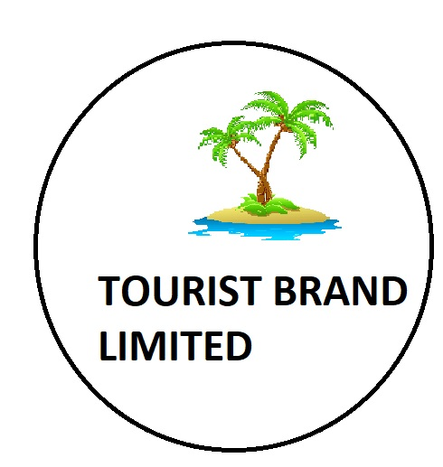
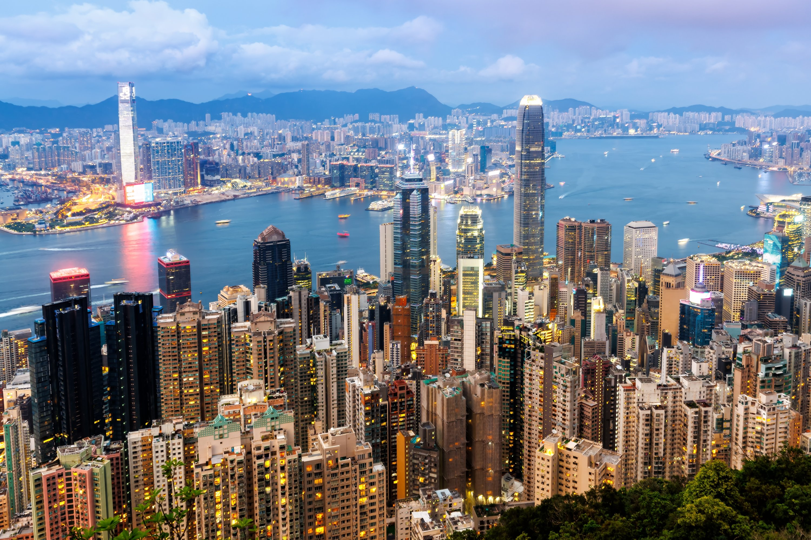

Hong Kong[e] is a special administrative region of China. Situated on China's southern coast just south of Shenzhen, it consists of Hong Kong Island, Kowloon, and the New Territories. With 7.5 million residents in a 1,114-square-kilometre (430 sq mi) territory, Hong Kong is the fourth-most densely populated region in the world. Hong Kong was established as a colony of the British Empire after the Qing dynasty ceded Hong Kong Island in 1841–1842 as a result of losing the First Opium War. The colony expanded to the Kowloon Peninsula in 1860 and was further extended when the United Kingdom obtained a 99-year lease of the New Territories in 1898. Hong Kong was occupied by Japan from 1941 to 1945 during World War II. The territory was handed over from the United Kingdom to China in 1997. Hong Kong maintains separate governing and economic systems from those of mainland China under the principle of one country, two systems.